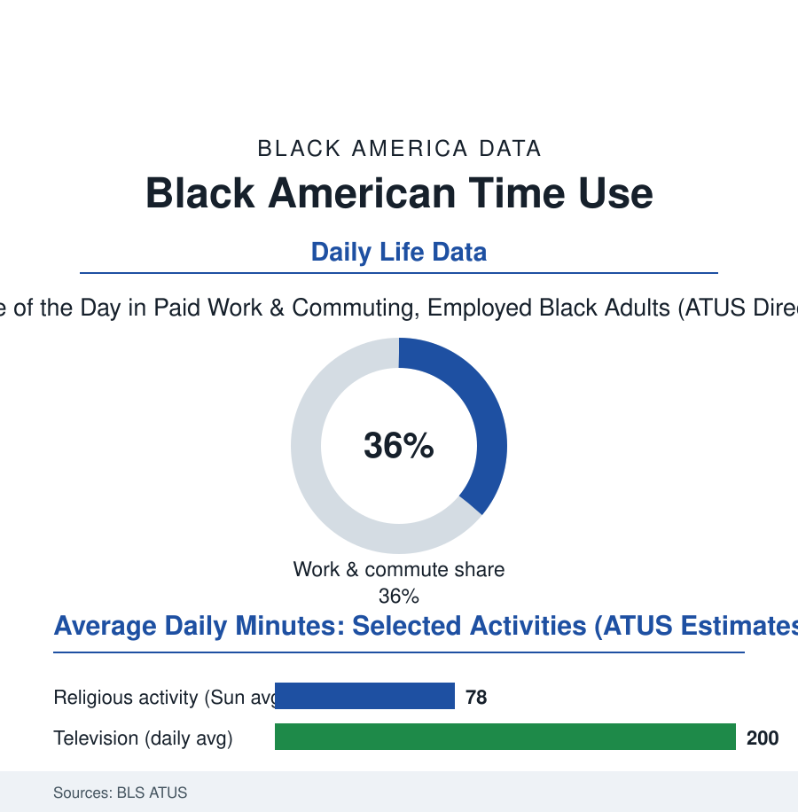

Black Census
The Time File: How Black America Spends Its Hours
The government's time diaries record the day in minutes — and the Black American day, in sleep, care, work, and worship, has its own arithmetic. The time file.

Every other file in this atlas counts money, people, or outcomes. The American Time Use Survey counts the one resource all of them spend: the day itself — thousands of respondents reconstructing yesterday, minute by careful minute, for the Bureau of Labor Statistics. Rendered by race, the Black American day has a distinctive and revealing arithmetic of work, care, faith, and rest. This article reads the time file.
The Working and Caring Hours
The diaries' first entry is the commute's tax, already familiar from the transportation file but here priced in the day's own currency: the Black worker's longer average commute compounding across the week into hours the other files call leisure or sleep. The care rows carry the file's heaviest concentration: Black adults — and Black women above the whole table — recording among the highest daily minutes in care of household children and, in the elder rows, of adults (the caregiving file's population visible here as a time allocation: the grandmother's hours, the daughter's double shift of paid work and unpaid care stacked in a single diary page), the kin-care of the extended household's children appearing in the diaries as the fictive-kin system's time signature — care given to children the survey must classify as 'non-household' because the family form outruns its categories. The religious rows hold the file's signature datum: on an average Sunday, Black Americans record the nation's highest minutes in religious and spiritual activity by a wide margin in the ATUS cuts — the faith file's institutions measured not in memberships but in hours, the diary catching what the affiliation surveys cannot: the three-service Sunday, the choir's rehearsal evening, the Bible study's Wednesday, a week structured around the church as the calendar's load-bearing wall. And the civic rows record their own pattern — the volunteering minutes' distribution across the faith and fraternity infrastructures, the organizational life of the Greek and club files rendered as the hours their members actually give.
Rest, Screens, and the Sleep Deficit's Diary
The leisure rows are the file's most argued-over pages: the television minutes running highest in the Black diaries (the media file's audience data confirmed at the level of the day — three-plus hours against a national figure nearer two and three-quarters in recent ATUS cuts, the arguments over cause running from the shift schedule's odd hours to the advertising economy's targeting), the reading-for-pleasure minutes at the table's low end in the same diaries that record the nation's highest churchgoing — a combination the literacy file and the faith file must hold simultaneously, the community's text culture running oral, musical, and congregational in channels the diary's 'reading' box was not built to see. Then the sleep rows, where the time file meets the health file with a stopwatch: the Black adult's average sleep duration the shortest of the major groups in the ATUS and health-survey convergences — the deficit distributed across the night-shift file's schedules, the second jobs of the income file, the care rows above, and the neighborhood environment the sleep studies instrument (the noise, the light, the shift-working household's revolving door) — the diary recording, in minutes, the upstream arithmetic of the mortality file's largest abstractions: a population sleeping measurably less than its neighbors, in the hours the diaries can see. The time file's closing lesson is methodological: money data can hide a transfer; time cannot. Twenty-four hours is the one budget with no credit line, and its allocation across a population is the most honest x-ray of that population's constraints and devotions that the federal statistics produce.
Reading the Time Data
Count a people's money and you learn their economy; count their minutes and you learn their life. The ATUS diaries draw the Black American day in its actual proportions: the longest commutes, the heaviest care, the fullest churches, the shortest sleep. Every other file in this atlas is downstream of that day — the hours are where the numbers live before they become statistics. It is fitting that the most human dataset in the federal inventory is kept in diaries: yesterday, reconstructed by the people who lived it, one ordinary, irreplaceable, unrepeatable day at a time.
More in Black Census
The Black Population of the United States: Size, Definitions, and Distribution
The Black population of the United States totals 52.8 million — 15.4 percent of the nation. How the Census Bureau defines and counts the population, and where it lives.
Black Median Household Income in the United States
Black median household income stands at $56,490 in the Census Bureau's annual income report — how the figure is measured, how it compares, and what drives it.
The Black Poverty Rate: Levels, Children, and the Long Trend
The official Black poverty rate is 17.1 percent — against 11.1 percent nationally and 7.7 percent for non-Hispanic White Americans. How poverty is measured and what the data show.
Source: U.S. Bureau of Labor Statistics American Time Use Survey; Pew Research Center time-use analyses; National Academies time-use research.